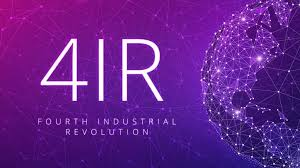

THOBILE LUNGILE MBATHA

FOR BEATIFUL EYES ONLY SEE THE GOOD IN OTHERS,
FOR BEATIFUL LIPS ONLY SPEAK WORDS OF KINDNESS AND FOR A POSE WALK WITH KNOWLEDGE YOU ARE NEVER ALONE.
NATURE IS SO GORGEOUS WE JUST HAVE TO TAKE
A MOMENT TO ADMIRE
PARIS

Paris is one of the most beautiful cities in the world. It is known worldwide for the Louvre Museum,
Notre-Dame cathedral, and the Eiffel tower. It has a reputation of being a romantic and cultural city. The
city is also known for its high-quality gastronomy and the terraces of its cafés.
FRENCH
| ENGLISH | FRENCH |
| Hello | Bonjour |
| How are you? | Comment allez-vous |
| I am good, thanks | Je vais bien merci |
FAVOURITE SUBJECTS
4IR Bootcamp
The Fourth Industrial Revolution is a way of describing the blurring of boundaries between the physical, digital, and biological worlds. It’s a fusion of advances in artificial intelligence (AI), robotics, the Internet of Things (IoT), 3D printing, genetic engineering, quantum computing, and other technologies. It’s the collective force behind many products and services that are fast becoming indispensable to modern life. Think GPS systems that suggest the fastest route to a destination, voice-activated virtual assistants such as Apple’s Siri, personalized Netflix recommendations, and Facebook’s ability to recognize your face and tag you in a friend’s photo.
Agile Rapid Skills Acquisition
Agile acquisition is the strategy, structure, and process to effectively adopt and apply agile software development methodologies. Agile acquisition integrates planning, design, development, and testing into an iterative life cycle to deliver small, frequent, incremental capabilities to an end user. Rapid is about tailoring, delegating and going fast. Rapid refers to critical thinking and scheduling associated with a program team navigating an acquisition pathway spectrum from strategy development through program execution in order to expedite delivering capability into the hands of the developer.
Full Stack Web Development

A full stack web development deals with the development of both client and server software. In addition deals with mastering HTML and CSS, also knows how to: Program a browser (like using JavaScript, jQuery, Angular, or Vue) Program a server (like using PHP, ASP, Python, or Node) A full stack developer is an engineer who can handle all the work of databases , servers, systems engineering, and clients. Depending on the project, what customers need may be a mobile stack , a Web stack, or a native application stack.